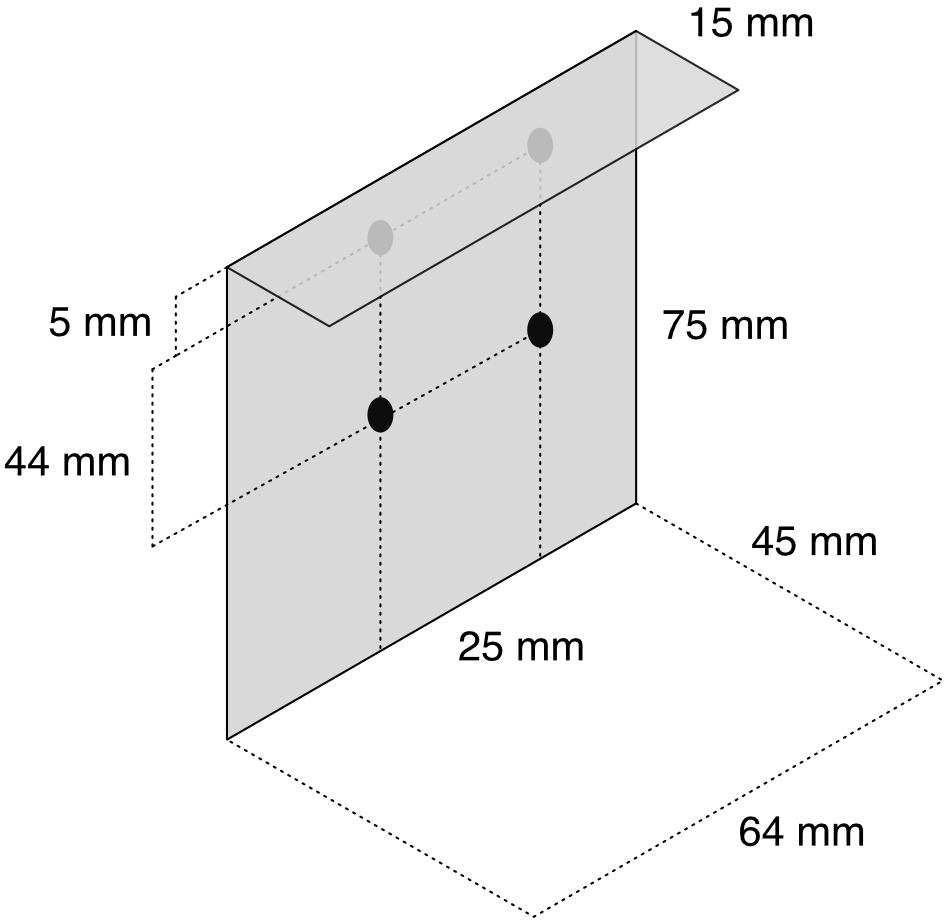

The purpose of this document is to describe the hardware and software requirements a sensor must meet to be used with the Waggle platform.
Space inside a typical Waggle node may be limited. For example, an Array of Things node provides a rectangular volume of size 45mm x 64mm x 75mm inside of the outer shield for a sensor. A mounting plate is provided with four M3 sized (3mm diameter) holes available for securing a sensor. The top of the backplate extrudes forward slightly leaving about 5mm of top clearance.
There are a number of options for connecting a sensor. The main interfaces include a USB connection directly to our guest module and I2C, SPI, RS232 though our coresense board. Ethernet or WiFi could be used in a customized node but are not currently being used for sensors in any Waggle node.
The preferred option is to use USB (for example, serial over USB) which simplifies your task to only writing the node and server side plugin pair.
Interfaces which use the coresense can be used but require the development of firmware code adhering to the rather stringent coresense packet format. Since all processing will occur through the coresense, this also means you have less control over what happens to your data as it moves through the pipeline.
Depending on which interface is used, your sensor must adhere to the following power constraints.
A typical Waggle node may have limited network bandwidth. For example, the Array of Things nodes are all transmitting over a wireless modem, which is somewhat limited in both speed and available data usage. These are important considerations when deciding on the both the rate and volume of data intended to be transmitted. Our suggestion is to restrict the rate to at most one message to be sent every 10 seconds and that the message size is at most 1K.
Once a sensor is sized and fitted to be used in a node it will need at least a node and server side plugin pair and possibly coresense firmware if a non-USB interface option was used. The node side plugin needs to read data from the sensor and prepare it to be pushed to the server. The server side plugin handles any post-processing which needs to occur on the transmitted data from the node side plugin. In addition, these should be designed with fault tolerance in mind in case a network carrier or server may go down. A node will take care of queuing up data in these circumstances but one should be prepared to handle a delayed data stream correctly.
The exact details are described in more detail in our plugin development document but we provide a brief example of what each piece may be responsible for.
The coresense is a PCB containing a collection of many different sensors. It periodically sends a binary packet over a USB serial port containing readings from each of the onboard sensors. The node side plugin reads this packet from the serial port, checks it for validity and then sends it as-is to the server. The server side plugin takes this packet, decodes the various readings from it and forwards it further down the server side data pipeline.